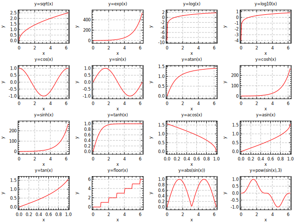

opt (gd:1 lc:red ts:1.2)
vp 0.18 1.0 0.22 0.82 0.65
div 4 4
@ pi2 = 3.14159265*2
for func (sqrt exp log log10 cos sin atan cosh sinh tanh acos asin tan floor)
@ xr = [func]=={acos,asin,tan} ? "0,1" : "1e-4,[pi2]" ;# x-range
set x = range(100,[xr])
set y = [func](x)
plot x y (tl:"y=[func](x)")
end
for func_x (abs(sin(x)) pow(sin(x),3))
set x = range(100,0,[pi2])
set y = [func_x]
plot x y (tl:"y=[func_x]")
end
